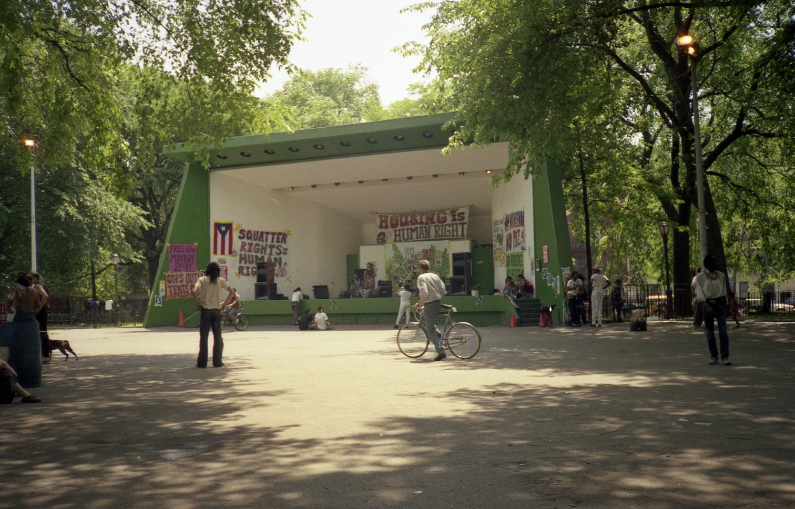
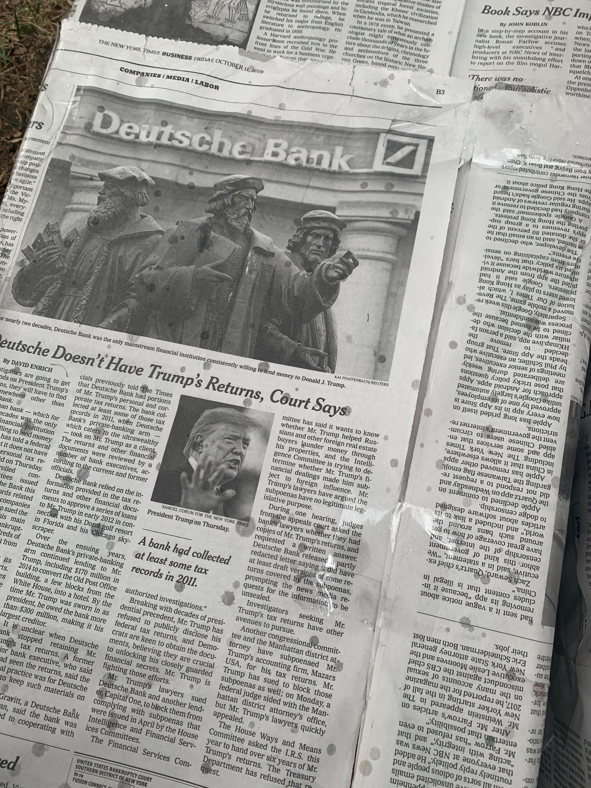
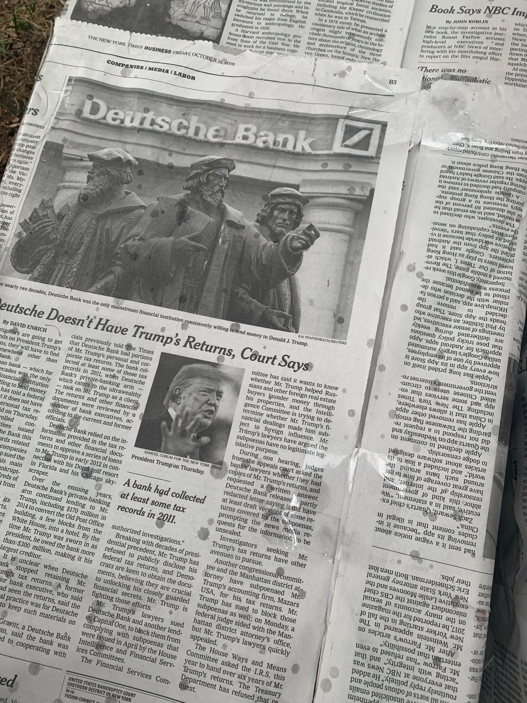

PERSONAL WORK
Instruction Sets for Strangers
While working on a team, we designed and implemented a site specific intervention that enabled stranger interaction. For each iteration, we did not use written instructions, challenging us to design with intuition in mind. Our chosen space was Tompkins Square Park, which has an extensive history of protests and riots. Through the years, it has been an important place for many subcultures in our community.
TOMPKINS SQUARE PARK BANDSHELL, REMOVED IN THE 1990s
Iteration 01
Mini “create your own picket sign” station
Many people passed by but no one interacted
Change location, make table more prominent in space
Iteration 02
Building blocks wrapped in newspaper
Many interactions, blocks knocked down, picked up by others
Test new locations, box sizes and box formations
Iteration 03
Larger blocks wrapped in newspaper
No interactions due to weather and material restrictions
Waterproof boxes, plan around events calendar
 

Overall, our second iteration was my favorite. The interaction of community members knocking the structure down to have other members pick it up was interesting. In the future I look forward to completing another project based on this observation.
TEAM MEMBERS: MARIANA CHAHROURI, MICHELLE MCNEE, HANEU(L) BAK